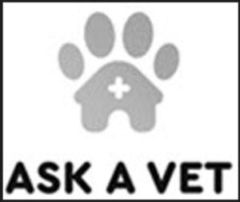

Trade Mark Journal No.2025/048 28 November 2025
WO0000001886215 (3,5,6,9,18,20,21,25,28,31,35,36,41,42,43,44,45)
Office of origin: Australia
Date of International Registration:4 April 2025
Date of designation in the UK:
4 April 2025

- Class 3
- Powders, creams, lotions, aerosols, fluids, shampoos, sprays and conditioners all being non-medicated pet grooming preparations grooming aids for pets, and other goods in this class adapted for use in connection with pet animals.
- Class 5
- Veterinary preparations, sanitary preparations for veterinary purposes, medicated lotions, air fresheners, medicated shampoos and grooming aid preparations, insecticides, insecticidal sprays and powders, medicated deodorants for animals, insecticidal collars and tags for animals, insect repellents and animal repellents; disinfectants, medicated breath fresheners, vitamin preparations, dietetic preparations for medical purposes, nutritional food additives for medical purposes, and dietary supplements; pharmaceutical preparations for animal training purposes, including house-training aid preparations, animal gnawing prevention preparations; fungicides and pesticides; food supplements for animals (minerals); food supplements for animals (trace elements); food supplements for animals (vitamins); medicated supplements for foodstuffs for animals; medicinal food supplements for animals; medicines for animals; nutritional feed supplements for animals; pharmaceutical preparations for animals.
- Class 6
- Chains for pets; accessories for pets including collars, chains, bells, buckles (not for clothing), leads, hooks, choker chains, identity tags, all the foregoing being goods made of metal; doors of metal and door flaps of metal for use with pet animals; badges made of metal, containers including bins and baskets made of metal, door knockers made of metal, keyrings made of metal, money boxes made of metal; bells for animals.
- Class 9
- Application software; application software for comparing pet insurance providers; application software for online pet stores; application software managing and accessing data in relation to pets; communication software; communications processing computer software; computer software; computer software (programs); computer software (recorded); computer software applications (downloadable); computer software for business purposes; virtual assistant software; electronic publications (downloadable); electronic publications including those sold and distributed online; downloadable mobile software application for searching pets available for adoption and lost and found pets; microchips for the monitoring and identification of pets; downloadable computer software for use in animal shelter management, database management, document management, receiving, processing, transmitting, displaying and storing data, preparing invoices and receipts, payment processing, mapping of routes of animal control officers and for responding to animal control and rescue requests, for tracking people, objects and pets using gps data, monitoring activities of animal control officers and rescuers, purchasing and renewing animal licenses, making donations to animal shelters and animal welfare organizations, tracking and recording veterinary visits and medical information, tracking animal adoptions and completing animal adoption documents, sending automatic e-mail messages, integrating photos into databases and allowing non-registered users to upload pet health; computer software for sending and receiving electronic correspondence, images, audio, video, and other rich content primarily relating to pets and animals for social media via computer and communication networks; computer software that allows consumers to search, access, and otherwise utilize online databases for the purposes of storing and retrieving correspondence, images, audio, video, and other rich content in the field of pets, animals, and products and services relating thereto; computer software that allows consumers to access information about goods and services for pets and animals.
- Class 18
- Articles of clothing for animals; leashes (leads) for animals; collars for animals; collars for cats and dogs; coats for animals; coats for cats and dogs; clothing for pets; blankets for animals; leads for animals, muzzles, harnesses, leather chews and bits; non-electronic training aids for animals (collars, harnesses, leashes, muzzles).
- Class 20
- Beds for animals; carrier baskets for animals (other than bags); carrier baskets for transporting domestic pets (other than bags); pet carrier baskets; pet cushions; pet furniture; beds for domestic pets; beds for household pets; cushions for lining pet crates; hutches for pets; kennels for household pets; racks, namely, furniture for pet requisites.
- Class 21
- Food bowls for pets; containers for pet food; food containers for birds; food containers for pets; food containers of metal for pets; food containers for domestic animals; food containers for pet animals; pet feeding bowls.
- Class 25
- Clothing; articles of clothing; footwear; headgear.
- Class 28
- Toys for pets; imitation bones being playthings for dogs; toys and playthings for cats.
- Class 31
- Pet food; dog biscuits; dog food; bones for dogs; bird food; canned foods for animals; cereals products for consumption by animals; distillery waste for animal consumption; edible chews for animals; food for animals; animal foodstuffs.
- Class 35
- Wholesale, and retail services relating to the sale of pet and animal supplies including accessories, care and grooming accessories and equipment, apparatus for cleaning of droppings, training pads, litters, odour and stain control products, water treatments, training equipment, bedding, breeding boxes, houses, kennels, transport containers, cages, aquariums, tanks, poultry feeders and waterers, food products, food containers and storage units, watering bottles, animal health products, food and dietary supplements, sports drinks, exercise and stress recovery products, veterinary products; sale of pets and animals; membership programs and customer loyalty programs for commercial, promotional and advertising purposes; provision of business consultancy and information services relating to the sale of pets and animals; provision of advice relating to the sale of pets and animals, business administration and assistance services relating to the sale of pets and animals; administration of the business affairs of franchises, business administration, management, establishment, planning, operation and marketing services for businesses, retail outlets and franchises; the bringing together for the benefit of others a variety of goods, enabling customers to conveniently view and purchase goods in a retail store or on pages of a website specialising in pet and animal products and accessories; advertising, marketing, promotion and publicity services provided in connection with any of the foregoing services; subscription-based order fulfilment services for retail and wholesale services in the field of pet food, edible pet treats and oral care products for pets, namely receiving and processing orders of such goods to end customers, and providing customer information relating to the orders; online retail services.
- Class 36
- Pet and animal insurance; pet and animal health insurance; provision of insurance information; advisory services relating to insurance; arranging of insurance.
- Class 41
- Pet and animal training; animal obedience training.
- Class 42
- Creating and maintaining weblogs (blogs) for others; hosting of weblogs (blogs); cloud computing; providing virtual computer systems through cloud computing; hosting of software as a service (saas); software as a service (saas); creating and designing website based indexes of information for others using information technology; information technology (it) services (computer hardware, software and peripherals design and technical consultancy); computer software consultancy; computer support services (programming and software installation, repair and maintenance services); development of computer software application solutions; online provision of web-based software (non-downloadable); provision of online non-downloadable software (application service provider); development of computer platforms; platform as a service (paas); internet portal services (designing or hosting); web portal services (designing or hosting); data storage, other than physical storage; electronic data storage; computerised data storage services; providing non-downloadable software application for searching pets available for adoption and lost and found pets; providing temporary use of web-based, non-downloadable computer software for use by animal shelters and humane societies, animal welfare organizations to manage and organize the intake, treatment and placement of lost or abandoned animals; software as a service (saas) services featuring software for invoicing, appointment and medical procedure scheduling and calendaring, uploading medical data, documents and images and generating reports; software as a service (saas) services featuring software for use in database management, calendar management, contact management and reminder generation relating to contacts; software as a service (saas) services featuring software that enables a business's customers to book appointments online; online provision of web-based computer software (non-downloadable) that provides web-based access to applications and services through a web operating system or portal interface; software as a service (saas) services featuring software that enables users to request and confirm appointments via a dashboard; providing temporary use of non-downloadable computer software for use in animal shelter management, database management, document management, receiving, processing, transmitting, displaying and storing data, preparing invoices and receipts, payment processing, mapping of routes of animal control officers and for responding to animal control and rescue requests, for tracking people, objects and pets using gps data, monitoring activities of animal control officers and rescuers, purchasing and renewing animal licenses, making donations to animal shelters and animal welfare organizations, tracking and recording veterinary visits and medical information, tracking animal adoptions and completing animal adoption documents, sending automatic e-mail messages, integrating photos into databases and allowing non-registered users to upload pet health data; computer technology support services, namely, help desk services; providing electronic storage of pet medical information; hosting a web site featuring technology which enables users to create profiles for themselves, their pets, and animals; providing temporary use of non-downloadable social networking software applications primarily focused on pets and other animals; providing temporary use of non-downloadable software for the transmission of text, graphics, images, video, audio, and other electronic data primarily relating to pets and other animals; hosting a web site featuring technology that enables internet users to upload, download, share, comment on, post, access, link, blog, modify, alter and otherwise view and manipulate media and information content, including text, graphics, images, video, audio, and other data, for social media primarily focused on pets and other animals; creating an online community for pet and animal goods and services providers, pet owners, and others who interact with pets and other animals for the purpose of discussions regarding topics relating to pets and animals, organizing charitable and for-profit events relating to pets and animals; file sharing services, namely, hosting a website featuring technology enabling users to upload and download electronic files.
- Class 43
- Pet and animal boarding; boarding house services for pets and animals; kennel boarding services for pets; animal feeding services (in owner's absence).
- Class 44
- Veterinary services; veterinary assistance; pet and animal grooming services (including clipping, brushing and washing); health care services for pets and animals; information services relating to veterinary pharmaceuticals; providing information, including online, about veterinary services; advisory services relating to the care of animals; advisory services relating to the care of pet animals; animal breeding.
- Class 45
- Pet sitting; dog walking services; adoption agency all relating to pets; information, consultancy and advisory services in relation to all of the aforementioned services.
OBICARE ASSET MANAGEMENT PTY LTD
Representative: IP SOLVED (ANZ) PTY. LTD., PO BOX R1791, ROYAL EXCHANGE NSW 1225, AUSTRALIA